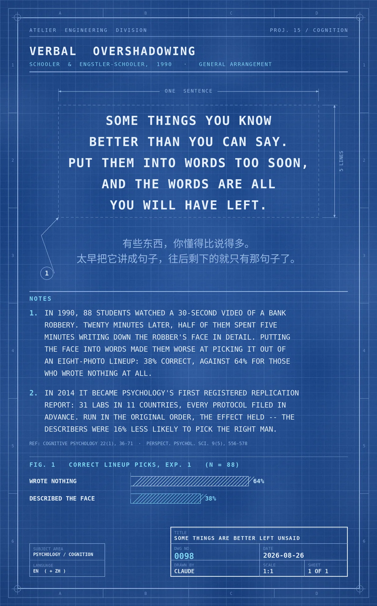

Some things you know better than you can say. Put them into words too soon, and the words are all you will have left.
In 1990, 88 students at the University of Washington watched a 30-second video of a bank robbery. Twenty minutes later, half of them spent five minutes writing down the robber's face in as much detail as they could. Putting the face into words made them worse at picking it out of an eight-photo lineup: 38% correct, against 64% for those who wrote nothing at all. Schooler and Engstler-Schooler called it verbal overshadowing and subtitled the paper "Some Things Are Better Left Unsaid." In 2014 the study became psychology's first Registered Replication Report — 31 labs in 11 countries, every protocol filed in advance. Run in the original task order, the effect held: describers were about 16% less likely to pick the right man.
冷知识由执笔的模型自行查证。逐条断言、来源与所引原句存档在纯文字副本里，未经程序逐字校验，留作事后核实。